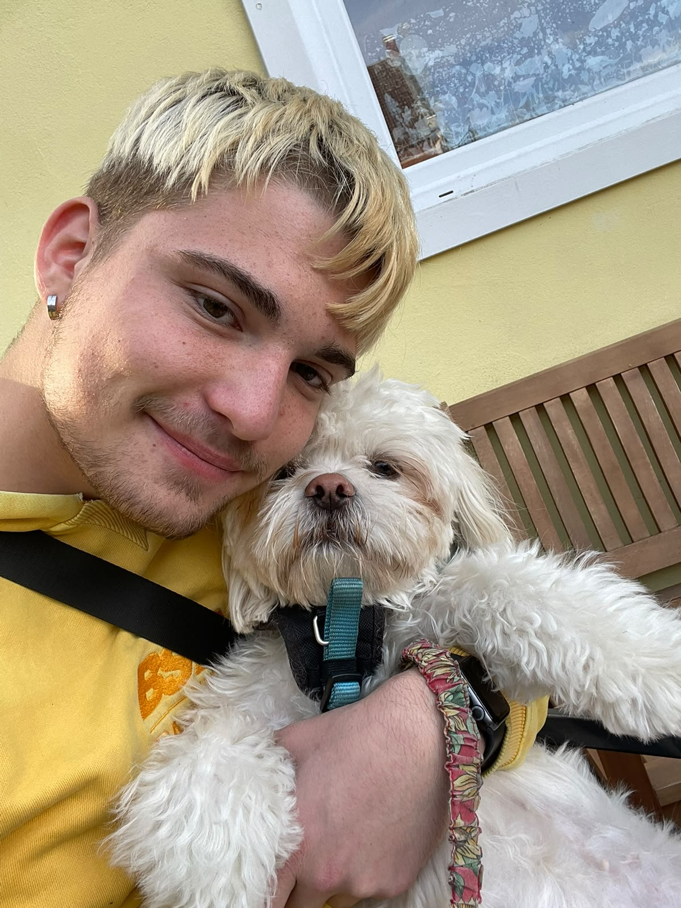

Über mich
Ich bin Jason, komme aus Berlin und lerne gerade, Kinder und Jugendliche im Alltag professionell zu begleiten.

Wer ich bin
Ich bin ein praktisch veranlagter Mensch. Ich packe gern mit an, ob beim Aufbau für eine Veranstaltung, in der Werkstatt oder hinter dem Tresen. Genauso gern sitze ich am Computer und baue an eigenen Websites.
Was mich verbindet, ist der Umgang mit Menschen. Ich höre zu, erkläre geduldig und arbeite am liebsten im Team. Deshalb habe ich mich für eine Ausbildung im sozialpädagogischen Bereich entschieden.
Mein schulischer Weg
Von 2021 bis 2025 habe ich die Best-Sabel-Oberschule in Berlin besucht und dort die Berufsbildungsreife (BBR) erworben. In dieser Zeit habe ich auch die ersten praktischen Erfahrungen in der Arbeitswelt gesammelt.
Meine praktischen Erfahrungen
Bei der BUG Verkehrsbau SE habe ich von November 2023 bis Februar 2024 Einblicke in Gleisbau, Tiefbau und Maschinenbau bekommen, im Sommer 2024 kam noch eine weitere Praxiswoche dazu. Auf einer Baustelle merkt man schnell, wie wichtig Sorgfalt, Sicherheit und Absprachen im Team sind.
Im Mellowpark habe ich anschließend zwei Praktika gemacht: von Dezember 2024 bis Februar 2025 im Kochbereich und von März bis Juni 2025 im Holzbereich. Beides sind Bereiche, in denen man genau arbeiten muss und am Ende sieht, was man geschafft hat.
Die Sätze dazu, was mir die Stationen gebracht haben, sind meine eigene Einschätzung.
Mein Bundesfreiwilligendienst
Ab September 2025 war ich im Landhaus Rosenthal, einer Kinder- und Jugendfreizeiteinrichtung in Berlin – zuerst im Praktikum, danach im Bundesfreiwilligendienst bis August 2026.
- Nach kurzer Einarbeitung habe ich den Betrieb im Café der Einrichtung selbstständig übernommen. Das Café ist eine Anlaufstelle für Kinder, Jugendliche und Familien, dort werden auch Spiel- und Sportgeräte verliehen.
- Ich habe mit Kindern gespielt, sie im Alltag unterstützt und praktische, kreative und handwerkliche Aktivitäten mitgestaltet.
- Bei Veranstaltungen habe ich bei Vorbereitung, Durchführung sowie Auf- und Abbau von Ständen und Sitzgelegenheiten mitgearbeitet.
- Kleinere Reparaturen gehörten ebenfalls zu meinen Aufgaben.
- Später habe ich neue Praktikantinnen und Praktikanten eingearbeitet – das hat mir besonders Spaß gemacht.
Während dieser Zeit habe ich außerdem an einem Erste-Hilfe-Seminar für Babys, Kinder und Erwachsene teilgenommen.
Meine aktuelle Ausbildung
Seit 2026 mache ich die Ausbildung zum Sozialpädagogischen Assistenten an der Beruflichen Schule für Sozialwesen Pankow. Ich bin im ersten Ausbildungsjahr.
Ich möchte meine praktischen Erfahrungen mit dem fachlichen Wissen aus der Ausbildung verbinden. Mehr dazu auf der Seite Sozialpädagogik.
Meine Interessen und Stärken
Mich interessieren Technik und digitale Themen, Musik, Bewegung, handwerkliche und kreative Projekte und natürlich die Arbeit mit Kindern und Jugendlichen. Mehr dazu unter Interessen.
Was andere an mir schätzen und was ich selbst an mir sehe:
Mein Lebenslauf als PDF wird hier bald verfügbar sein. Bis dahin schicke ich ihn gern auf Anfrage per E-Mail.